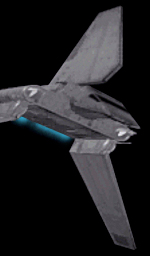
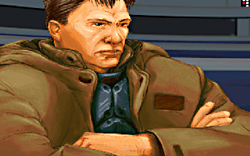

| There came a clank from below as the wings of the shuttle locked into place. The ship was pulling away from the frigate, and increasing in speed as it moved toward the hyperspace point. A muffled buzz emanated from the cockpit as the pilot and the bridge of the frigate gave their farewells, and then there was the familiar tingling and pressure on the back of the neck as the shuttle jumped to light speed.
The pressure was relieved rather quickly as my body adjusted to the new velocity. I shook my head to disapate any lingering side effects, as well as to try to break through the tension that was steadily mounting. It was still somewhat unbelieveable. Lieutenant Page himself, Head of the Alliance Commando Divisions, had set up this trip. Two days ago he'd approached me and offered up the opportunity of a lifetime. Like normal, he wouldn't elaborate, but instead guaranteed it was right up my alley. How could I refuse? I brought my head up as the door to the cockpit whisked open. The pilot's head emerged, a friendly grin on his face. "Hello there," he said. "Care to join me up here?" |
I turned to the pilot. "About how long till we get there?"
"Oh, we're quite a ways out. Should be several hours, even at these speeds."
My mouth fell open. "That far? I was under the impression we were just transferring to a neighbor system. Where exactly is this place?"
The pilot chuckled. "Now, you know I can't tell you that, lad." He eased back in his seat. "Ever since the 'Hammer this place has been one of the biggest kept secrets in history. Rivaling the Death Star projects, I hear."
"What does it all have to do with me?"
"Nobody filled you in, eh? Typical." he snorted. Leaning forward he dropped his voice several levels, even though there was no one besides myself to hear it. "You're going out here to learn, lad. They want you to train with the best; to become the best. And right now 'the best' means Katarn."
My heart skipped a beat. "The Katarn? Kyle Katarn?"
"The one and only." The pilot relaxed in his chair. On his face he wore that type of grin that implys you know something important, and are part of a select group. "Katarn stays out here now, and Page's commandos keep it all buttoned up tight. Since the Dark Trooper conflict he has holed himself up out here. He's been practicing something, keeping to himself mostly. Sometimes I bring in Alliance bigwigs trying to convince him to join up with the New Republic or people like you. In exchange for the commandos keeping him safe and the Council keeping it's mouth shut about him, Katarn trains those that Page finds promising. But you.... you've got the highest security around you I've ever seen. You wouldn't believe the questions they threw at me just to decide whether I was clean enough to make this run. I think the Council has some big plans for you."
He stared at my confusion and disbelief for a moment, amused and curious at the same time, then turned back to the controls. "You might want to get some sleep. I'll let you know when we get there."
It was obvious the conversation was finished, at least for now. So I closed my eyes, and quickly dropped away.